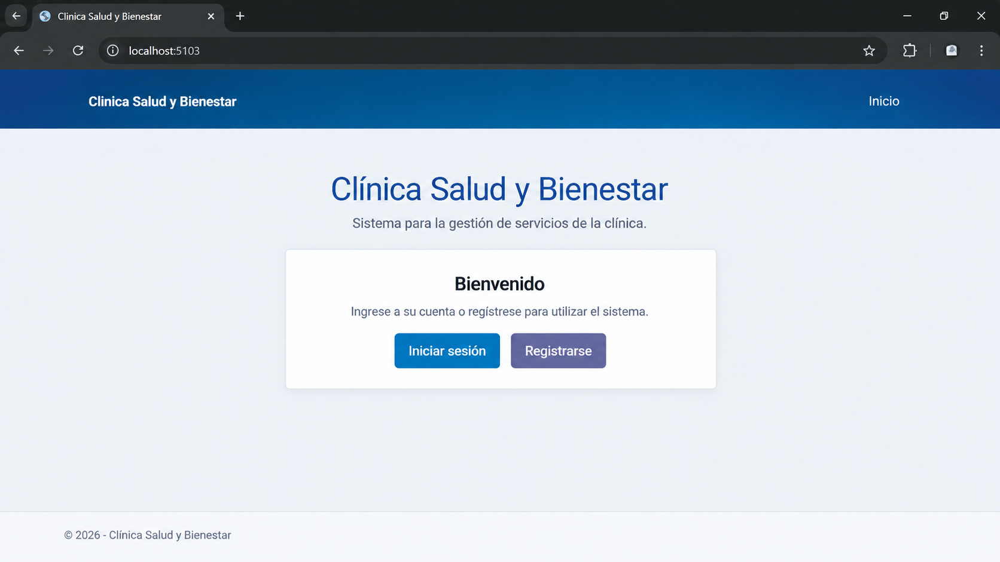
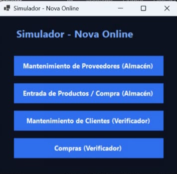

Clínica Salud y Bienestar
Python | HTML

Sistema de reserva de citas para clientes que permite seleccionar servicios, fechas y horarios.
Ver proyectoExperiencia práctica en programación
Python | HTML

Sistema de reserva de citas para clientes que permite seleccionar servicios, fechas y horarios.
Ver proyectoPython | Java | C# | MySQL

Sistema de gestión de clientes, compras e inventario, desarrollado mediante diferentes tecnologías y comunicación por sockets.
Ver proyectoTeléfono: +506 8723-1961
Correo: valentimarsol@gmail.com
GitHub: Mi perfil de GitHub